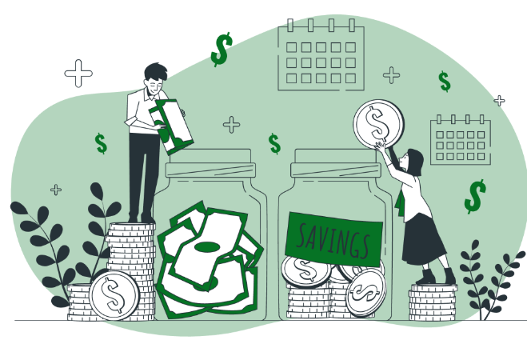

Andrew's Financial Literacy Portfolio
This portfolio brings together my work and learning across important financial literacy topics. It is organized to make each subject easy to find, review, and understand.
About this portfolio
Learning skills for real-life decisions.
From managing a budget to understanding credit and insurance, these ten learning areas cover financial concepts that can be useful now and in the future. Select a topic below to explore its page and related class materials.
Portfolio topics
Browse all ten financial literacy learning areas.
 01
01Decision MakingExplore the choices, trade-offs, and habits that shape everyday financial decisions.
02
BankingLearn how financial institutions, accounts, and everyday banking services work.
03
MoneyBuild a stronger understanding of money and how it moves through everyday life.
04
IncomeExplore earning, careers, pay, and the different ways people bring in income.
05
SavingUnderstand how saving habits can help prepare for goals and unexpected expenses.
06
InvestingExplore how investing works and how people think about long-term financial growth.
07
CreditLearn about borrowing, credit history, and using credit responsibly.
 08
08InsuranceDiscover how insurance helps people manage financial risks.

09BudgetingSee how planning income and expenses can help make money decisions easier.
10
Consumer SkillsPractice comparing options and making informed choices as a consumer.